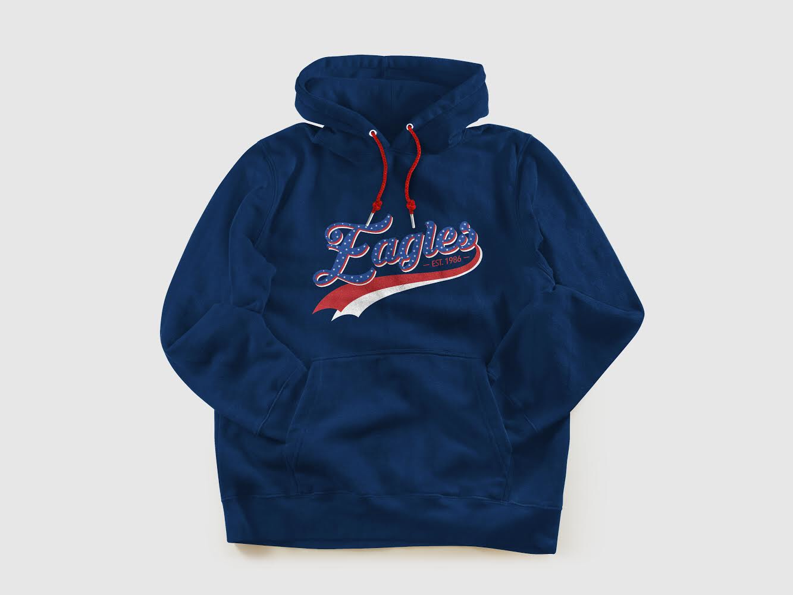
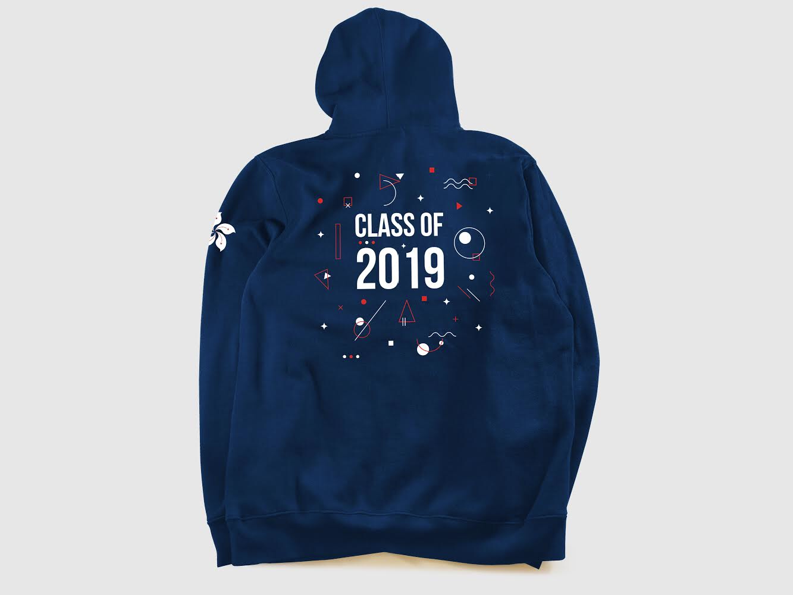
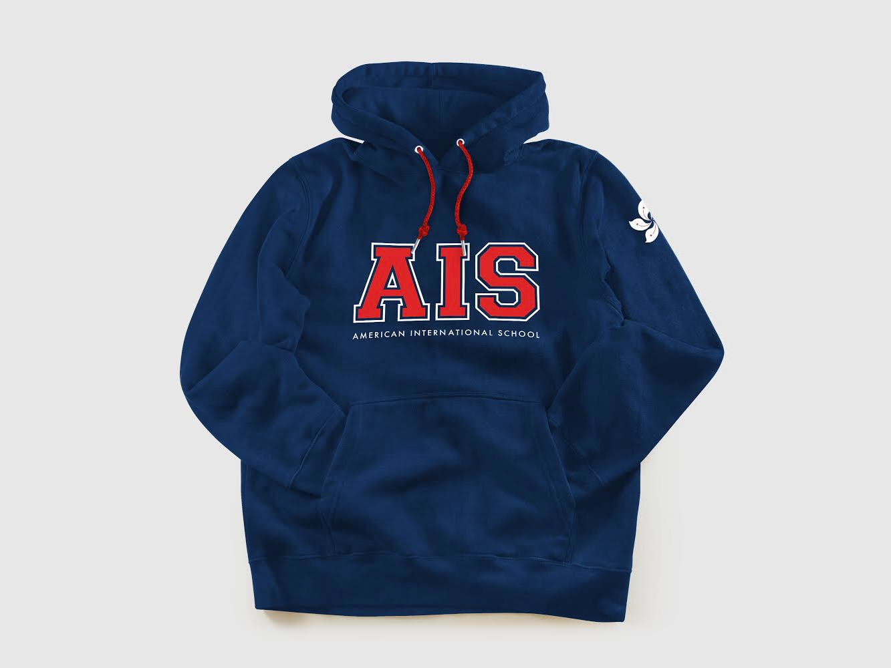
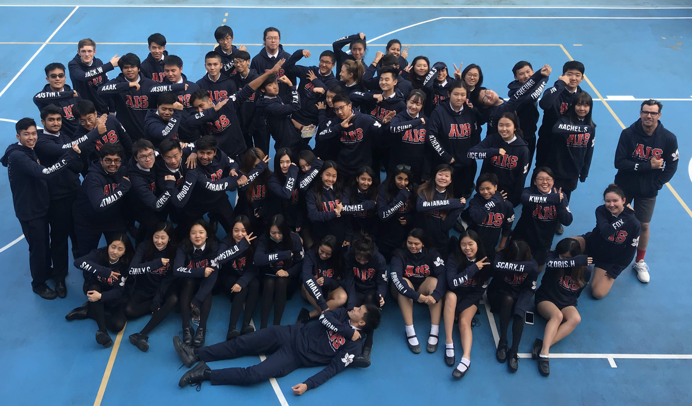

PROM 2019
Event Organisation
Client: American International School, Hong Kong
Challenge:
Organise, Fundraise, and Promote the yearly graduation prom. As president, my tasks were to oversee all subcommittees in the group of 40 members. Handle all decisions, be present at all events, oversee all financial costs and profits.
Outcome:
Raised 50,000 HKD (~6,000 EUR) in profits over the course of two years, Fundraised and hosted over 20 events. The prom was held at the Pullman Hotel, with a record-breaking 124 guests present.
FUNDRAISING
Most of the first half of the year was fundraising for the main event. I had to organise, create proposals for administrative approval, and execute the fundraising event. One of my major accomplishments of the fundraising events was being given permission to be the first group of seniors who are allowed to wear their senior hoodies during school hours. Previously, this was not allowed. The hoodies were used to raise money for prom. I was really satisfied with this as I worked really hard to both design the hoodie, get the hoodies approved by administration, as well as work with manufacturers to produce the hoodies in under a month. Here are some of the hoodie drafts that we made before the final design.
   Class of 2019 with their hoodies on, made by Prom Committee
PROM NIGHT
The month leading up the prom was one of the hardest tasks I have ever had to do.I had to organise the hotel's demands and requests, students, teachers, the photobooths, and also the decoration manufacturers. It was very difficult to manage and it was all left to me. Overall, it turned out successfully. Here are some images of the night.